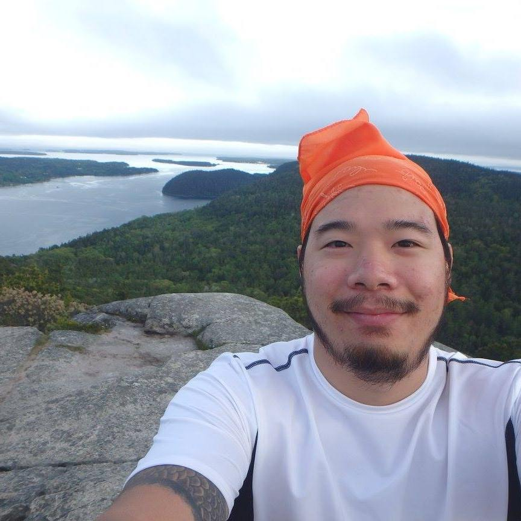
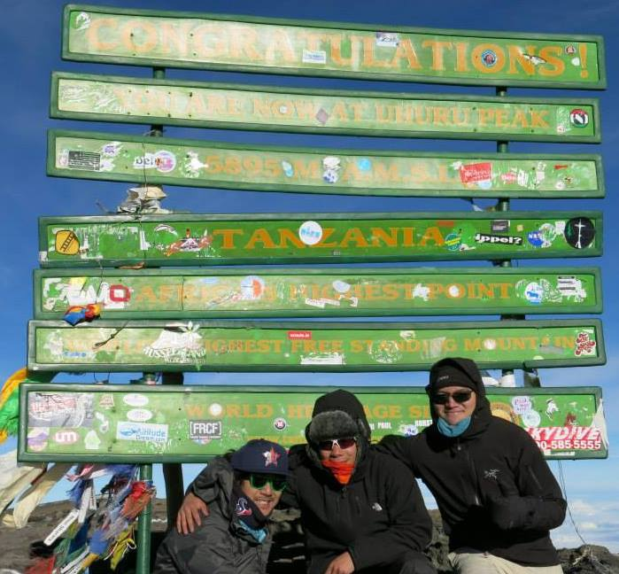
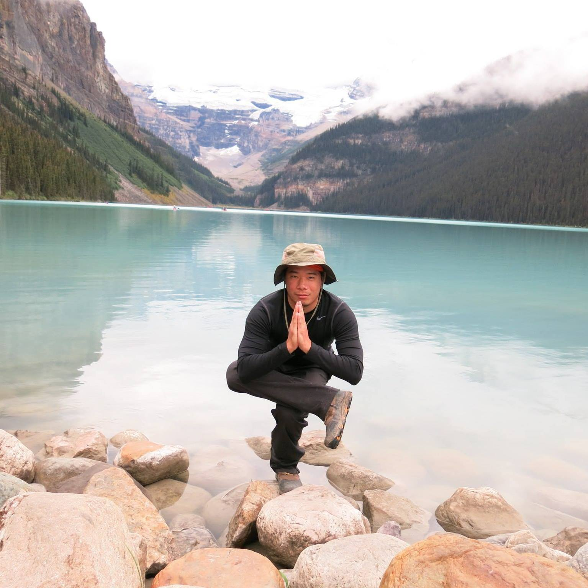
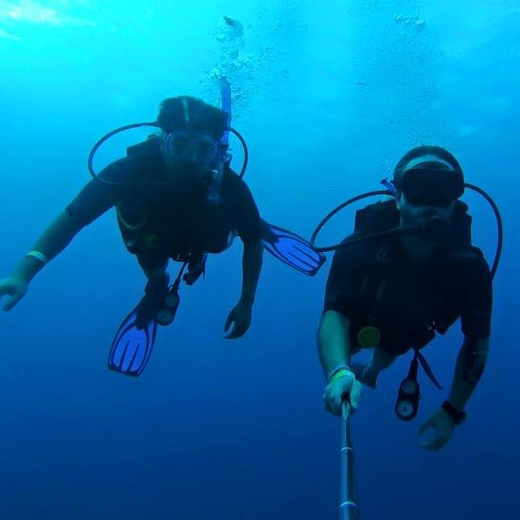
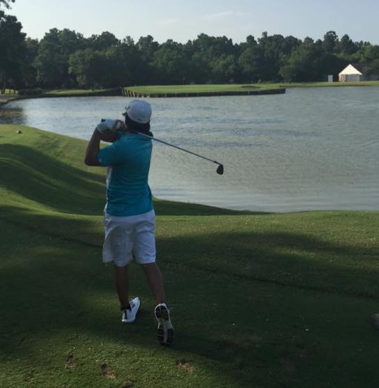

Email: DanD.Tran@yahoo.com
Dan Tran
I graduated with a dual degree from University of Houston with a Mathematics and Chemistry degree. I am searching for a challenging opportunity in a diverse set of skills. Along with having this opportunity I would like expand my horizon. My problem-solving skills along with a positive attitude have earned me accolades from previous and current jobs and definitely prepare me for future endeavors.
 I enjoy the outdoors and I am very adventurous. I realize I am adventurous when I decided to go to Africa to climb Mount Kilimanjaro. The mountain climb was pretty awesome. We did a 4-day trek to the summit of the mountain and at midnight we had to start climbing so we can reach the top by sunrise. Once we reached the top I was amazed at the view. From that day on I decided to go on more hikes and see the wonders that this planet has to offer us.
 There this hike I went on with a few friends in Montana and Canada. I didn't know what to expect but once we got there it was beautiful. We did a 6 hours hike into the valley and set up camp for the night. The whole hike we were scared that a bear would appear since we were hiking in bear country. After a night in the wilderness, we went to Lake Louis, which is in Banff National Park Canada. This lake was magnificent. When you take a picture of it, it really looks like it was photo shopped.
 Another adventure I really enjoy is my Belize trip. I got to enjoy their beaches and lobsters. Some time when I am not exploring above the surface, I would dive into the sea to explore. My main goal for this trip was to dive in the Big Blue Hole. Unfortunately I wasn't able to get The Hole due to a storm. When we were heading to The Hole the boat was super chopping. Everyone was flying everywhere during our cruise. Half way to The Hole, our captain decided that it would be to dangerous to go further and so he lead us to their coral reef. Their coral reef is the 2nd largest in the world. It was beautiful and the water visibility was 50 feet. I got to see a huge manta ray just swam by.
 When I am not traveling I enjoy playing a game of golf or going out to dance. I am not that good at golfing but you have to play to get better. As for dancing I been dancing salsa for a year and 2 stepping for 6 months.
Email: DanD.Tran@yahoo.com